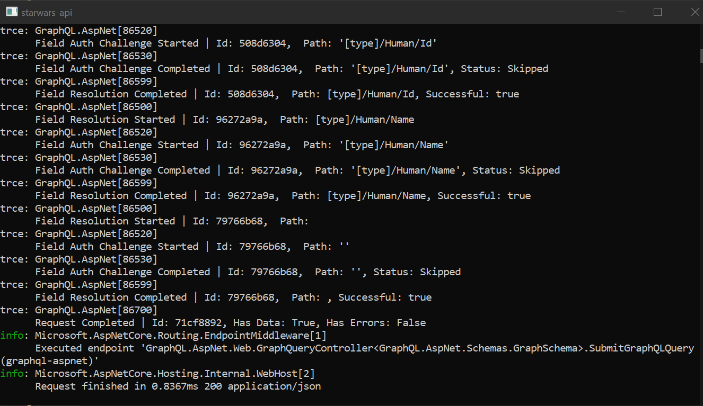

Structured Logging
GraphQL ASP.NET utilizes structured logging for reporting runtime events. The log messages generated aren't just packed strings but actual objects. All internal log events are raised as objects that inherit from IGraphLogEntry.
IServiceCollection.AddLogging()
GraphQL's logging extends off of .NET's built in logging framework. To enable it, you need to register logging to your application at startup. By doing so, GraphQL will automatically wire up its own logging as well.
//Startup.cs
public class Startup
{
public void ConfigureServices(IServiceCollection services)
{
// other service entries omitted for brevity
services.AddLogging();
service.AddGraphQL(/*...*/);
}
}
Extending IGraphEventLogger
GraphQL registers an IGraphEventLogger with methods for recording the the standard events created during query execution. This can be extended by injecting your own IGraphEventLogger to the DI container before calling .AddGraphQL() and provides a clean way to inject your own custom events from your graph controllers into the logging pipeline.
It can be helpful to view the source code for the DefaultLogger that GraphQL registers for reference.
Using IGraphLogger
Its common practice to inject an instance of ILogger or ILoggerFactory into a controller in order to log various events of your controller methods.
This is fully supported but GraphQL can also generate an instance of IGraphLogger with a few helpful methods for raising "on the fly" log entries if you wish to make use of it. IGraphLogger inherits from ILogger, the two can be used interchangeably as needed.
public class BakeryController : GraphController
{
private IGraphLogger _graphLogger;
private IDonutService _service;
public BakeryController(IDonutService service, IGraphLogger graphLogger)
{
_service = service;
_graphLogger = graphLogger;
}
[MutationRoot]
public Donut CreateDonut(string name)
{
Donut donut = _service.CreateDonut(name);
var donutEvent = new GraphLogEntry("New Donut Created!");
donutEvent["Name"] = name;
donutEvent["Id"] = donut.Id;
_graphLogger.Log(LogLevel.Information, donutEvent);
return donut;
}
}
GraphLogEntry is an untyped implementation of IGraphLogEvent and can be used on the fly for quick operations.
Custom ILoggers
By default, the log events will return a contextual message on .ToString() with the important data related to the event, so they can be easily serialized. This is very handy when logging to the console during development.

But given the extra data the log entries contain it makes more sense to implement a custom ILogger to take advantage of the full object.
The ILogger interface's workhorse method is:
Log<TState>(LogLevel, EventId, TState, Exception, Func<TState,Exception,String>)
The GraphQL log entry will be passed on the state parameter and will be castable toIGraphLogEntry.
The state parameter of
ILogger.Logwill be an instance ofIGraphLogEntrywhenever a GraphQL ASP.NET log event is recorded.
using Microsoft.Extensions.Logging;
using GraphQL.AspNet.Interfaces.Logging;
public class MyCustomLogger : ILogger
{
public IDisposable BeginScope<TState>(TState state)
{
// ...
}
public bool IsEnabled(LogLevel logLevel)
{
// ...
}
public void Log<TState>(LogLevel logLevel, EventId eventId,
TState state, Exception exception, Func<TState, Exception, string> formatter)
{
if (state is IGraphLogEntry logEntry)
{
// handle the log entry here
}
}
}
Log Entries are KeyValuePair Collections
While the various standard log events declare explicit properties for the data they return, every log entry is just a collection of key/value pairs that can be iterated through for quick serialization.
public interface IGraphLogEntry : IGraphLogPropertyCollection
{ /*...*/ }
public interface IGraphLogPropertyCollection : IEnumerable<KeyValuePair<string, object>>
{ /*...*/ }
Logging Category
All log events are registered under the the GraphQL.AspNet category. With the exception of field authorization fails, all log events are recorded at Debug or Trace.
Here we've enabled the log events through appsettings.json
// appsettings.json
{
"Logging" : {
"IncludeScopes" : false,
"LogLevel": {
"Default" : "Information",
"System": "Debug",
"Microsoft": "Information",
"GraphQL.AspNet" : "Debug"
}
}
}
Log Entries are not allocated unless their respective log levels are enabled. It is not uncommon for real world queries to generate 100s of log entries per request. Take care to ensure you have enabled or disabled logging appropriately in your environment as it can greatly impact performance if left unchecked. It is never a good idea to enable trace level logging for graphQL outside of development.
Scoped Log Entries
IGraphLogger is generated from your service provider on a "per scope" basis. By default, this is at the HTTP Request level. Any log entries created through it using .Log(LogLevel, IGraphLogEntry) will be injected with a scopeId and along with the date can produce a complete record of a request from when it was received through query plan generation, authorization and field resolution.
Here we've used a custom ILogProvider and written out a small sample of events to a json array. Note the shared scopeId on each entry. See the example projects to download the code.
[{
"eventId": 86000,
"eventName": "GraphQL Request Received",
"dateTimeUTC": "2019-09-23T22:05:39.6023597+00:00",
"logEntryId": "6afdf3d1f9464679becfbd2b96aa594f",
"operationRequestId": "a13f5f7232dc475783c4e4798cfb50d2",
"userName": "john-doe",
"queryOperationName": null,
"queryText": "query {\n hero(episode: EMPIRE){\n id\n name \n }\n}",
"scopeId": "3c3c858b1b344d0b9c0f8ac6b95469d1"
},
{
"eventId": 86400,
"eventName": "GraphQL Query Plan Generated",
"dateTimeUTC": "2019-09-23T22:05:39.7214431+00:00",
"logEntryId": "d133e032e2fc42a98a639ee8c72d2497",
"schemaType": "GraphQL.AspNet.Schemas.GraphSchema",
"isValid": true,
"operationCount": 1,
"estimatedComplexity": 9.5076,
"maxDepth": 2,
"queryPlanId": "57caffc5d5124f2fb08419ae99724974",
"scopeId": "3c3c858b1b344d0b9c0f8ac6b95469d1"
},
{
"eventId": 86599,
"eventName": "GraphQL Field Resolution Completed",
"path": "[type]/Human/Id",
"dateTimeUTC": "2019-09-23T22:05:39.8528847+00:00",
"logEntryId": "750ee155bf7e4eea895e5eec01d3fb6d",
"pipelineRequestId": "aa670d3e2d6a41e1b314711acf6bc51c",
"typeExpression": "ID!",
"hasData": true,
"resultIsValid": true,
"scopeId": "3c3c858b1b344d0b9c0f8ac6b95469d1"
}]